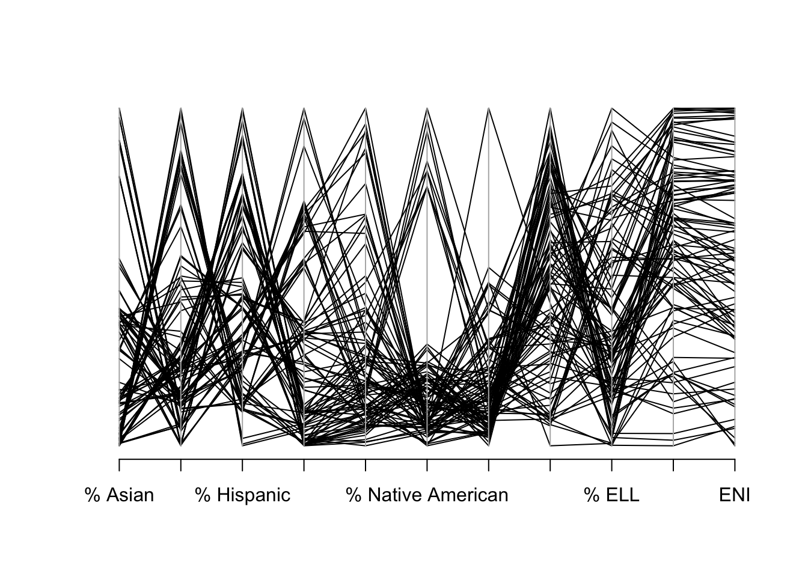
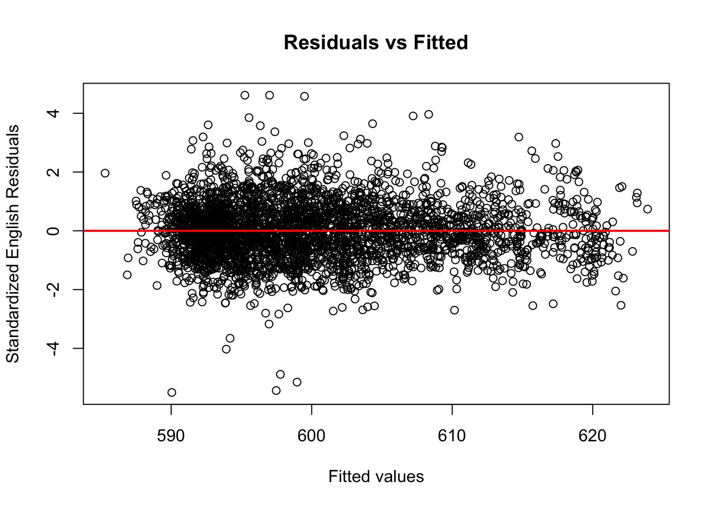

Chapter 4 Results
4.1 Plots and notes: Part 1 (Reading vs. Math test scores & the Covid-19 pandemic)
In investigating the relationship between Reading and Math scores, we started very broad by asking ourselves if there is a correlation between success on Math & success on ELA. We chose to break this down at the school level, because there is a lot more data for us to work with.
PLOT 1: READING VS MATH

The graphs above are three scatterplots of reading vs math test scores, separated based on the year the test was taken. The two main takeaways here are that there seems to be a strong positive correlation between reading and math scores in all three years, as one might expect. In other words, schools that performed well in math usually did well on reading too, and vice-versa. There were a few outliers each year, where some schools did noticeably better on math than on reading. There were also a few, less noticeable, schools who performed slightly better on ELA than on math.
The second big takeaway from these scatterplots is that math scores were much lower in 2022 than in years prior. There is also more variance in scores in 2022, which is demonstrated by the cluster of points being longer and wider than in the other two years. We can likely attribute this to the onset of the Covid-19 global pandemic, which abruptly forced students to adapt to online learning for anywhere between six months to an entire school year.
Now that we determined the relationship between success on both exams, we decided to investigate which exam students actually performed better on, over the years. Again, we are looking at this data on the school level because there is more data to work with. Note that the pink is ELA and the blue is Math. The places where they overlap, creating the light-purple color,
PLOT 2: OVERLAPPING HISTOGRAMS OF MATH/ELA SCORES FOR ALL 3 YEARS (GOAL: SEE WHICH STUDENTS PERFORM BETTER ON)

Looking at the histogram, we can see that there is a lot of overlap between scores in both subjects in this three year sample size. At first glance, it seems like student’s are performing slightly better on math than ELA, although both distributions look normal. Looking at the 5 number summaries for both groups, the most notable differences are that ELA has a min score of 559 compared to Math’s min score of 571 and that ELA’s median score is ~3 points higher than Math’s.
In order to test the significance of the difference in test scores, we can utilize the t-test. Our null-hypothesis is that the two sample means are equal (or that the test scores are the same).
##
## Paired t-test
##
## data: Mean_Scores and school$`Mean Scale Score_m`
## t = 34.808, df = 3327, p-value < 2.2e-16
## alternative hypothesis: true mean difference is not equal to 0
## 99 percent confidence interval:
## 2.423682 2.811298
## sample estimates:
## mean difference
## 2.61749Looking at the result of our t-test, we cannot reject the null hypothesis that our two sample means are the same, even at the 1% level of significance! Therefore, there is no evidence of a significant difference between math & reading scores during the three year period that our data comes from.
Even when we repeat the test only looking at the year 2022 (where we noticed a bigger difference than years prior in our scatterplot), there is still not enough evidence to reject the null hypothesis that the two sample means are the same, once again at the 1% level of significance.
##
## Paired t-test
##
## data: ela_2022 and math_2022
## t = 42.969, df = 1121, p-value < 2.2e-16
## alternative hypothesis: true mean difference is not equal to 0
## 99 percent confidence interval:
## 5.12013 5.77433
## sample estimates:
## mean difference
## 5.44723Now that we have seen there is no significant difference in the relationship between math & reading scores, even since the onset of the Covid-19 pandemic, we decided to investigate how scores have changed within one subject over time. We started by creating a Cleveland Dot Plot of Math scores in each district, for the 3 years of data we have. We chose to use the district data here because there are over 1,000 schools and that is not feasible for creating a Cleveland Dot Plot.
 The first thing that we noticed about this plot was the trend in scores over time; scores increased from 2018 to 2019, then decreased significantly for nearly every district in 2022, so much so that they are far below the 2018 scores! This drop off in 2022 can largely be explained due to Covid-19, but we do not have any proposed evidence for the nearly uniform increase in scores from 2018 to 2019. One notable exception to these observations is District 1, who dropped from 2019 to 2022, but still performed better in 2022 than 2018. There is also a lot of variation in scores between districts, which supports the claim that all public schools do not have access the same resources and quality of education.
The first thing that we noticed about this plot was the trend in scores over time; scores increased from 2018 to 2019, then decreased significantly for nearly every district in 2022, so much so that they are far below the 2018 scores! This drop off in 2022 can largely be explained due to Covid-19, but we do not have any proposed evidence for the nearly uniform increase in scores from 2018 to 2019. One notable exception to these observations is District 1, who dropped from 2019 to 2022, but still performed better in 2022 than 2018. There is also a lot of variation in scores between districts, which supports the claim that all public schools do not have access the same resources and quality of education.
Next, we did the same for ELA scores:
 This plot is extremely interesting because many Districts performed better on ELA in 2022 than in years prior! Furthermore, 2019 is the year where students performed the lowest for the majority of the districts, which is the exact opposite of what the Math dot plot told us. It is difficult to conclude why we see these different trends when we break down the data by subject then year. One suggestion is that students’ reading and critical thinking skills were challenged more than ever since the beginning of quarantine, when many people relied on social media posts articles to get the majority of their information regarding the ongoing global crisis. Their relationship with math and any quantitative skills may not have been integrated into their daily lives in the same way. Furthermore, year to year variance in test difficulty may explain some of the variance in scores.
(Note; the 2018/2019 ELA scores for District 4 are nearly identical, so it looks like we’re missing a year of data)
This plot is extremely interesting because many Districts performed better on ELA in 2022 than in years prior! Furthermore, 2019 is the year where students performed the lowest for the majority of the districts, which is the exact opposite of what the Math dot plot told us. It is difficult to conclude why we see these different trends when we break down the data by subject then year. One suggestion is that students’ reading and critical thinking skills were challenged more than ever since the beginning of quarantine, when many people relied on social media posts articles to get the majority of their information regarding the ongoing global crisis. Their relationship with math and any quantitative skills may not have been integrated into their daily lives in the same way. Furthermore, year to year variance in test difficulty may explain some of the variance in scores.
(Note; the 2018/2019 ELA scores for District 4 are nearly identical, so it looks like we’re missing a year of data)
4.2 Plots + Notes: Part 2 (NYC Student Demographics & Indicators of success)
For the second part of our analysis, we decided to explore the demographics of NYC schools, and how students’ identities impact their success on standardized testing. We started off by trying to learn more about how disability and funding interact in each school. The data includes an “Economic Need Index” (ENI) category that is the Department of Education’s internal metric for determining for creating a student’s individual funding needs. A student’s ENI is calculated using things like their housing status, English language learner status, eligibility for public assistance, and family income. You can learn more about how ENI’s are calculated at the student and school level here: (https://data.cccnewyork.org/data/map/1371/student-economic-need-index#1371/a/5/1622/127/a/a)
We created a heatmap of each schools’ percentage of students with a disability vs their ENI

There seems to be a slight positive association between ENI and %SWD each year, as noted by the trend from dark to lighter in the region around (0.5,0.15). Furthermore, the shape of the entire cluster itself loosely shows an increase in ENI as %SWD increases. This is interesting because disability status is not one of the explicit factors in calculating a student/school’s ENI. Students with disabilities deserve any necessary accommodations that will supplement their academic experience, yet the NYC DOE doesn’t explicitly factor this into an individual student’s need for funding. One might find it interesting to look at dropout rates of disabled students vs their ENI’s if they wish to learn more.
Next, we dove into the racial demographics of each district. We created a new “% POC” column in the data in order to plot race by district (which included the missing racial data group). We acknowledge the limitations of viewing race in the data as binary, which it is certainly not in real life. If one wishes to repeat this process, we would suggest potentially binning the data or creating a new “majority” categorical column that shows the leading racial demographic by percentage in a particular school/district.

## <ggproto object: Class FacetWrap, Facet, gg>
## compute_layout: function
## draw_back: function
## draw_front: function
## draw_labels: function
## draw_panels: function
## finish_data: function
## init_scales: function
## map_data: function
## params: list
## setup_data: function
## setup_params: function
## shrink: TRUE
## train_scales: function
## vars: function
## super: <ggproto object: Class FacetWrap, Facet, gg>From these boxplots, you can see that most NYC School Districts are primarily comprised of students of color. This is important to keep in mind when we investigate the relationship between race (as we have defined it here) and standardized testing success in our next plot. There is one outlier district each year, District 31, whose percentage of students of color is below 60 (but increasing each year). Looking back at our Cleveland Dot plots, District 31 performed in the top 11 in both Math & ELA every year, which is above average but not overwhelmingly great.
Now, we will look at all of the different student demographics of interest and determine the relationships between them all and test scores. In both of the following parallel coordinate plots, our factors of interest are score, total enrollment, % of students with disabilities, % of English language learners, % of students living in poverty, and % of students of color. We will do this using district data, because there is too much noise in the plot if we do it by district instead. The first plot is for ELA scores, and the second is for Math.

The biggest takeaways from this first graph is that there seems to be a negative association between the percentage of students who are English language learners and ELA test scores, there is a strong negative association between ELA test scores and the percentage of students of color, and that the percentage of students living in poverty has a slight negative correlation with the total enrollment. This first observation makes sense because taking a standardized test in a language that you are learning is an objectively difficult thing to do. The second observation is problematic when we consider our previous graph, showing that all districts are majority students of color; why is there a negative association between % of POC students and test scores in a majority POC school system?
(Add final interpretation)